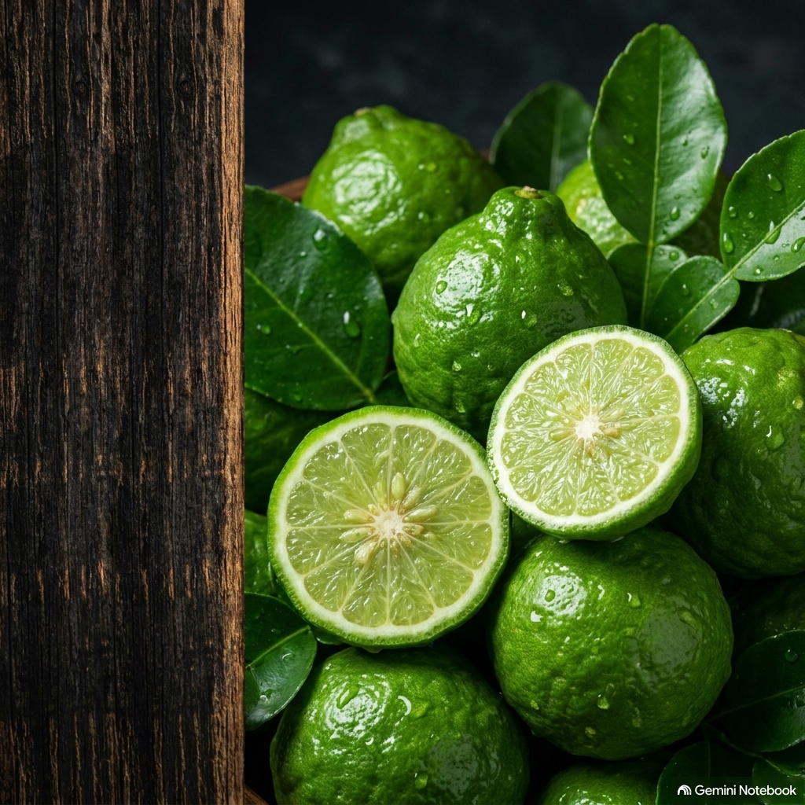
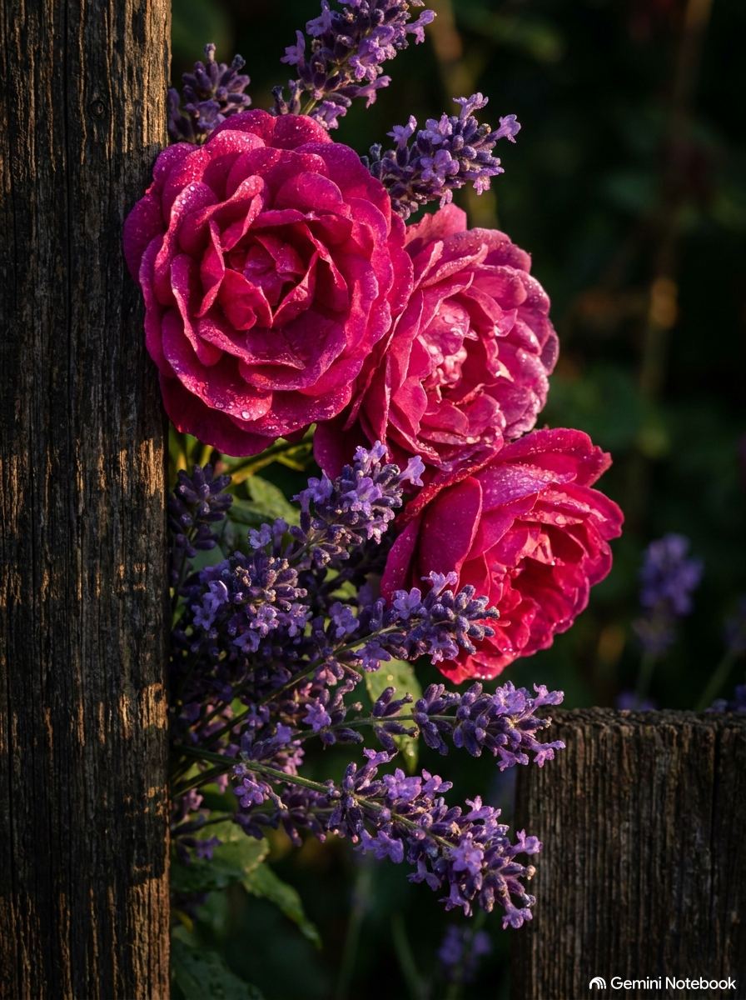
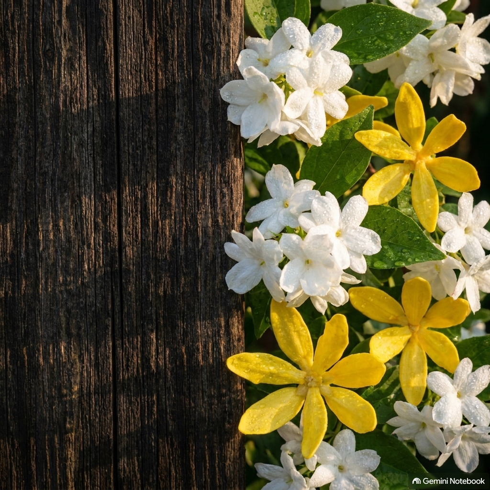
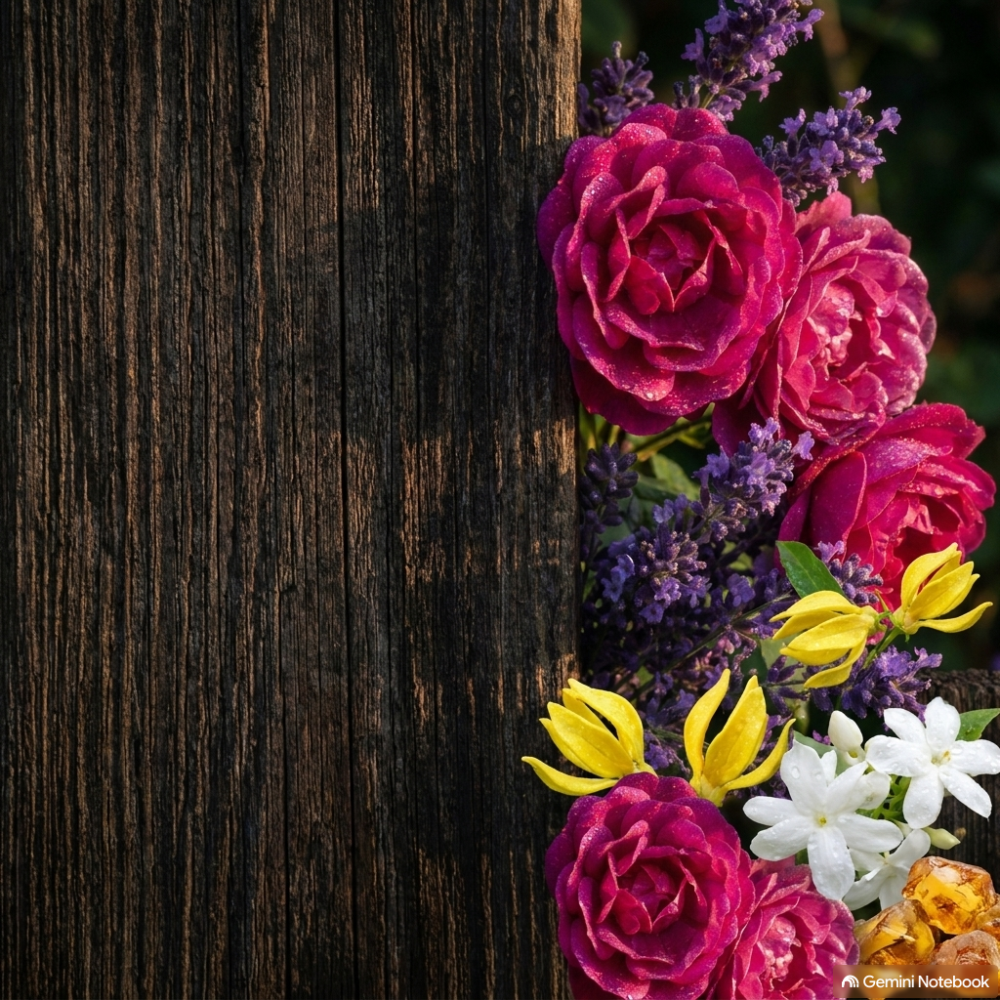
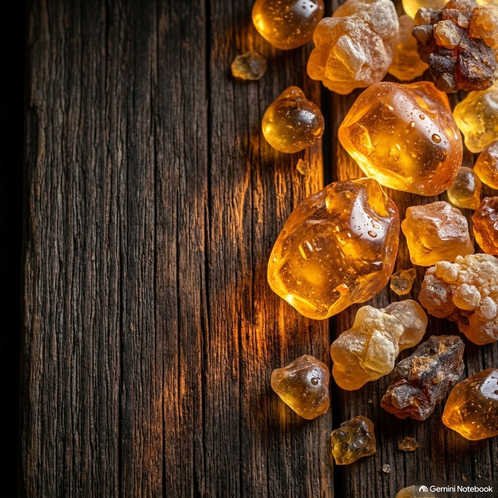

No More Bottles!
Natural Perfume Making Guide
1. The Wake-Up Call
Your skin is your body's largest organ—it drinks in whatever you put on it.
Commercial perfumes rely on synthetic fixatives, phthalates, and hidden chemical cocktails masked under the generic term "parfum". These endocrine disruptors interfere with your hormones and health every single day.
It’s time to break free from mass-produced corporate bottles and choose 100% clean, botanical ingredients.
2. The Botanical Heart
Master the alchemy of Ylang Ylang, Rose, and natural blending.
In No More Bottles!, you’ll unlock the secrets of the olfactory pyramid. Learn how delicate top notes like Bergamot dance with rich, sensual heart notes like Ylang Ylang and Rose of Alexandria.
Discover easy, step-by-step home techniques to formulate unisex, emotionally grounding fragrances without expensive laboratory equipment.
3. The Floral Depth
Capture the intoxicating essence of nocturnal florals in your custom blends.
Jasmine brings a rich, exotic warmth that elevates any natural formulation from a simple home mixture to a sophisticated boutique scent.
Learn how to balance heavy floral absolutes with crisp green notes to achieve a harmonious, multi-dimensional profile.
4. The Art of Blending
Pure essential oils last longer and smell richer than synthetic cheap fixatives.
Grounded by deep roots and warm resins, natural perfumes evolve beautifully on your skin throughout the day.
Beyond personal wellness, this is the ultimate homestead skill. Micro-batch, transparent, local artisan perfumery is the booming trend for the coming years.
5. Longevity & The Artisan Opportunity
Anchor your botanical creations with deep, timeless fixatives.
Using natural resins and balsams ensures your perfumes have incredible staying power naturally, without petrochemical interference.
Turn your passion into a trusted local craft or boutique brand and start your journey into independent natural perfumery today.